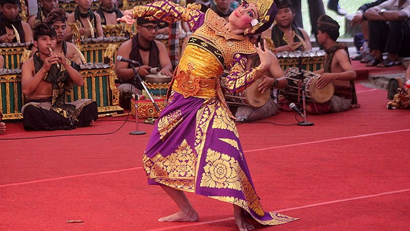

Tari Trunajaya
Tari Trunajaya adalah salah satu tarian kreasi baru Bali, tepatnya dari Kabupaten Buleleng, Bali Utara. Seni tari ini semula diciptakan pada tahun 1915 oleh Pan Wandres dalam bentuk Kebyar Legong, kemudian disempurnakan kembali oleh I Gede Manik.
Tari Trunajaya atau juga Terunajaya lebih menggambarkan gerak-gerik pemuda yang beranjak dewasa, sangat emosional dimana tingkah lakunya yang senantiasa berusaha memikat hati wanita.
Meskipun disebut sebagai penggambaran seorang pemuda, tari ini dikategorikan dalam tari putra keras yang umumnya ditarikan oleh penari putri.
Tari Trunajaya termasuk tari hiburan yang pertunjukannya bisa dimana saja, termasuk dihalaman pura, lapangan, panggung tertutup atau terbuka, ataupun ditempat-tempat selain itu.
Awalnya, tari ini adalah tari tunggal yang juga termasuk “tari babancihan” karena menghadirkan karakter antara laki-laki dan perempuan. Namun seiring perkembangannya, Tari Trunajaya ada juga yang dibawakan oleh lebih dari satu penari.
Dalam hal durasi, tari ini sangat fleksibel bisa pendek atau panjang. Durasi tarian terpendek umumnya berkisar 11 menit dari awal hingga akhir.
<< Kembali